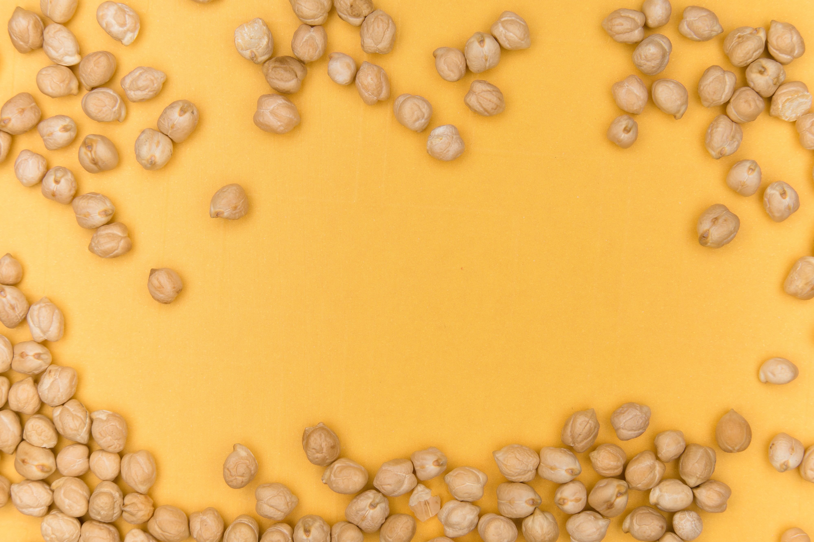

About Chickpeas
Chickpeas, also known as garbanzo beans, are nutritious legumes with a nutty flavor. They are a rich source of protein, fiber, vitamins, and minerals. Chickpeas are used in a variety of culinary dishes, including hummus, curries, salads, and more.
>Steps to Grow Chickpeas
- Choose a well-drained and sunny location for chickpea cultivation.
- Plant chickpea seeds in early spring, ensuring proper spacing between plants.
- Water the plants moderately, allowing the soil to dry slightly between watering.
- Protect chickpeas from pests and diseases through regular monitoring and treatment.
- Harvest chickpeas when the pods are dry and the seeds are firm, typically in late summer or early fall.
Extra Information
Chickpeas are not only nutritious but also versatile in cooking. They are a key ingredient in many vegetarian and vegan dishes and provide an excellent source of plant-based protein. Chickpea flour is used to make a variety of baked goods and snacks.